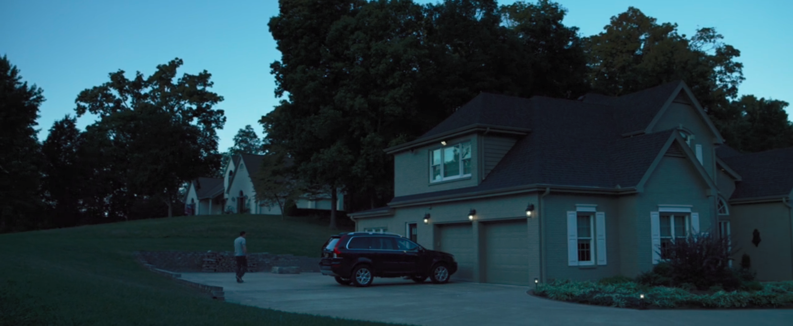
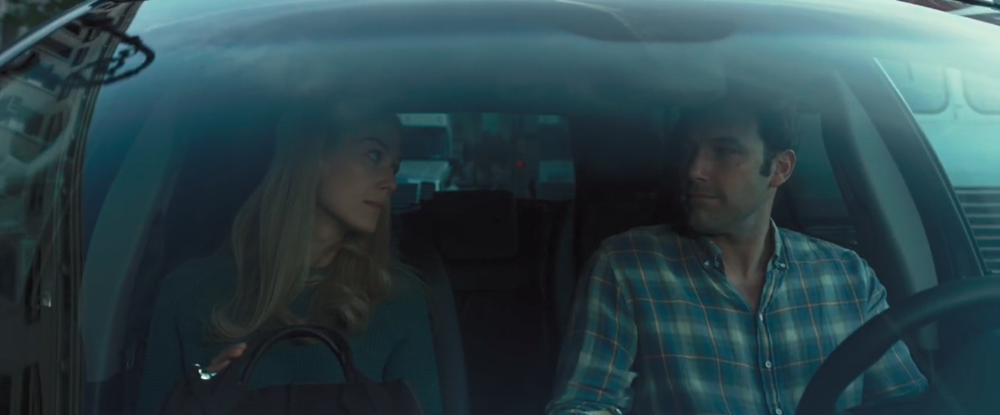
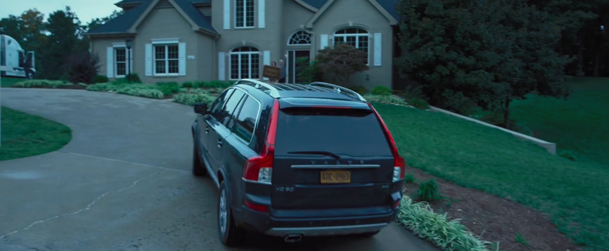
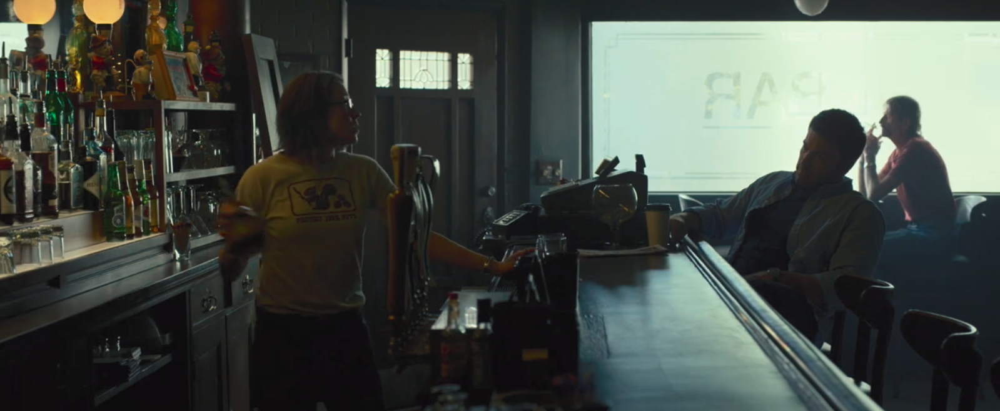
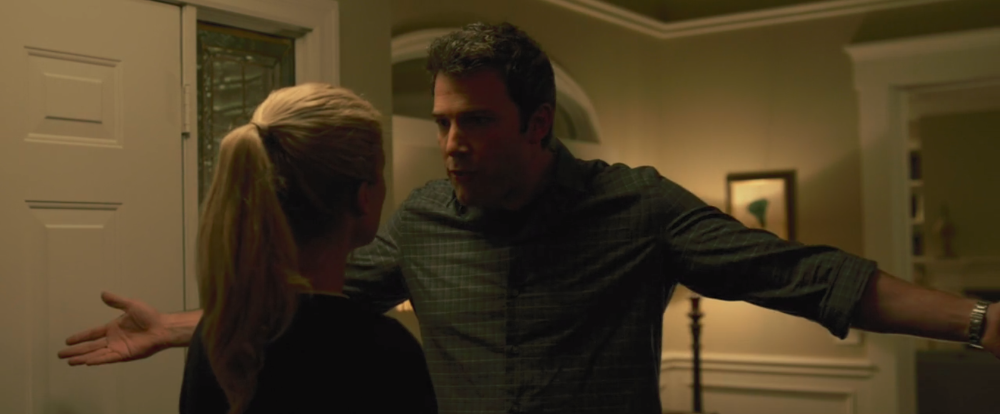
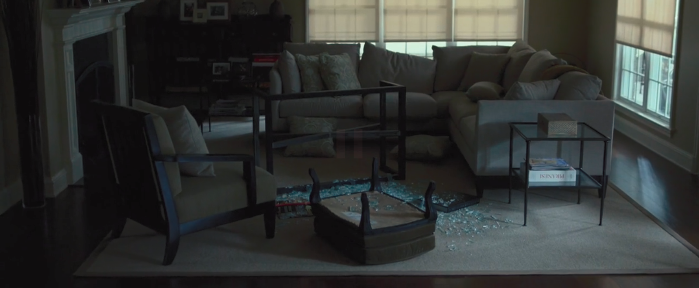
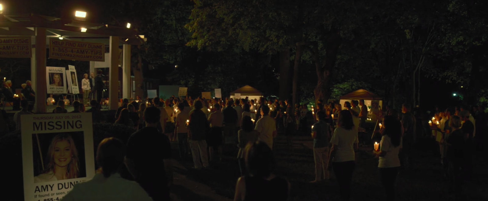

Nick møder Amy i New York. Begge er journalister. De gifter sig og flytter ind i en stor hus på Manhattan.
Alt er godt, indtil krisen rammer. Nick og Amy bliver fyret og de flytter til Nicks fødeby ved Missouri, hvor hans forældre bor og hvor de kan få et billigt hus.
 Nick sætter resten af Amys formue i en bar, som han driver sammen med sin søster.
Efter et styk tid, går det galt. De taler ikke sammen uden at skændes, Amy finder ud af, at han har en anden, men siger ikke noget… Og på deres 5-års bryllupsdag forsvinder Amy fra huset efter tegn på kamp...
 Nick går til politiet for at rapportere sin forsvundne kone, men han er den største mistænkte... Mens alle naboer er i gang med at lede efter Nicks kone, Amy er allerede kørt til Los Angeles...
